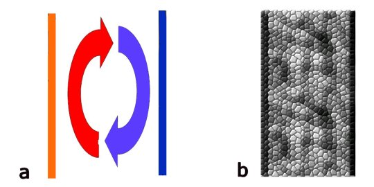
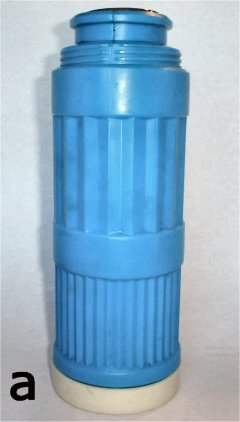
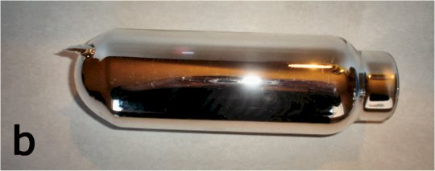
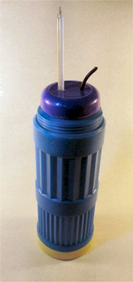

Numim izolare termică o modalitate de împiedicare a transferului
de căldură.
Numim izolare termică o modalitate de împiedicare a transferului
de căldură.
Elemente de termodinamică. |
Calorimetrie |
Măsurătorile calorimetrice sunt uşurate dacă transferul de căldură este stric limitat doar între corpurile care interesează. Altfel, ecuaţia calorimetrică ar avea prea mulţi termeni, care ar trebui determinaţi.
Pentru limitarea transferului de căldură se realizează o incintă care să limiteze cât de mult este posibil transferul de căldură între interiorul incintei şi exteriorul acesteia. Corpurile de interes sunt introduse în interiorul incintei şi transferă astfel căldură doar între ele.
Numim izolare termică o modalitate de împiedicare a transferului
de căldură.
 Activitatea experimentală 2-1
Activitatea experimentală 2-1
Investigaţi modalităţi eficiente de izolare termică a unei incinte. Lucraţi în mai multe echipe.
Pasul 1. Turnaţi apă cu temperatura 50°C în mai multe recipiente cu capacităţi de 0,5...1 L. Măsuraţi, folosind un termometru şi un cronometru, cât de repede se răceşte apa fierbinte. Alegeţi recipientul în care apa fierbinte cedează cât mai lent căldură.
Pasul 2. Îmbunătăţiţi izolarea termică a recipientului, folosind materiale la îndemână. Comparaţi cea mai bună performanţă cu rezultatele celorlalte echipe.
Cea mai eficientă modalitate de transfer a căldurii este convecţia (curenţi de fluid care transportă particule care se agită energic în zone cu particule care se agită mai puţin energic).
Poţi evita convecţia eliminând apariţia acestor curenţi. Dacă pereţii incintei conţin un fluid (cum este aerul), compartimentarea pereţilor în celule mici împiedică apariţia curenţilor de convecţie. (figura 2−1).

Figura 2-1. a) Curenţii de convecţie transportă molecule energice.
b)
Împiedicarea curenţilor de convecţie prin fixarea fluidului în celule.
Aşa este "fixat" aerul între fibrele îmbrăcăminte sau în polistirenul expandat.
O altă modalitate prin care poate fi transferată căldura este conducţia termică (ciocniri moleculare din aproape− în−aproape). Metalele sunt foarte bune conductoare termice. De aceea trebuie să eviţi pereţii metalici dacă doreşti o bună izolare termică. Alte materiale sunt foarte slabe conductoare termice (cum este polistirenul expandat).
Cea mai bună protecţie împotriva convecţiei şi conducţiei o reprezintă eliminarea particulelor care ar putea transfera energie! Vidul este cel mai bun izolator termic. Pereţi dubli, cu spaţiul dintre aceştia vidat − iată cea mai bună soluţie de împiedicare a conducţiei termice şi a convecţiei.
Chiar dacă videzi spaţiul dintre pereţii dubli, tot mai poate fi transferată căldură − prin radiaţie (asemenea luminii).
 Provocarea 2-1
Provocarea 2-1
Cum poţi oare întoarce din drum radiaţia termică?
Cu oglinzi! Suprafeţele reflectorizante împiedică transferul de căldură prin radiaţie.
Iată, aşadar, prototipul unei incinte care să asigure o foarte bună izolare termică: un vas cu capac, format din pereţi dubli, reflectorizanţi, cu spaţiul dintre aceştia vidat.
Această descriere coincide cu cea a unui termos! (figura 2−2)
|  | Figura 2-2. a) Termos. b) Vasul interor, cu pereţi dubli, reflectorizanţi. |
|  | |
Poţi adapta un termos pentru măsurători calorimetrice dacă înlocuieşti capacul termosului cu unul prin care să poţi trece un termometru şi un agitator (care să−ţi permită uniformizarea temperaturii în interiorul vasului), ca în figura 2−3.
|  | Figura 2-3. Adaptarea unui termos pentru măsurători calorimetrice. |
Activitatea experimentală 2-2
Măsoară ritmul în care se răceşte apa fierbinte, pusă într−un termos. Compară−l cu cel mai bun rezultat pe care l−aţi obţinut la activitatea experimentală 2−1.
Provocarea 2-2
Analizează cum este construit un calorimetru din laboratorul tău de fizică. Verifică−i performanţele şi încearcă să le îmbunătăţeşti.